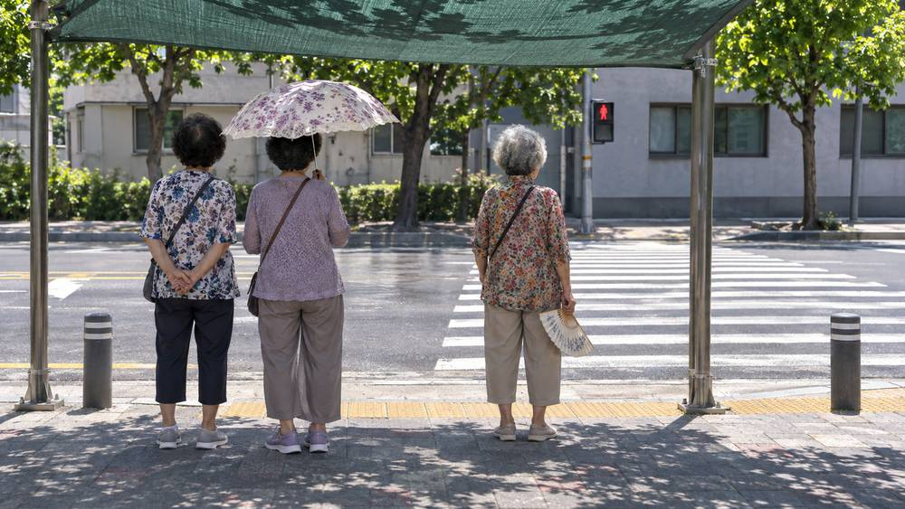

폭염 사망 한 해 207명, 공식 통계의 3.3배

질병관리청이 11월 23일 공청회 자료집에 실은 기후보건영향평가 결과(안)다. 고령화를 반영하면 2040년대 더위 사망이 한 해 3,229~4,893명 늘어난다.
2010~2024년 폭염으로 늘어난 사망자가 한 해 평균 207명으로 추정됐다. 질병관리청이 11월 23일 공청회 자료집으로 공개한 「제2차 기후보건영향평가 결과(안)」이다. 사망원인통계에 온열질환 사망으로 잡힌 한 해 평균 63명의 약 3.3배다. 15년 합계로는 온열질환 사망 950명, 폭염으로 늘어난 사망 3,125명이다(폭염 추정치는 더위로 나빠진 심장병 사망 등도 셈한 값이다). 한파로 늘어난 사망은 한 해 평균 1,157명으로 폭염의 약 5.6배였다.
폭염 때 정신질환 사망 위험은 20%, 한파 때는 24% 높아졌다. 폭염이 없었다면 숨지지 않았을 정신질환 사망자는 15년 동안 145명, 한파는 493명으로 추정됐다. 집중호우로 늘어난 입원은 2010~2024년 합계로 장염 1,996명, 다침 1,347명, 심혈관질환 1,253명 순이었다.
대기질 영역에서는 더위가 초미세먼지를 늘려 생긴 사망이 557명(2015~2024년 더위 사망의 8.3%)으로 나왔다. 천식 입원 가운데 꽃가루 때문인 비율은 1.96%에서 2.36%로, 알레르기비염 외래는 3.07%에서 4.20%로 늘었다.
2041~2050년 여름철(6~8월) 평균기온은 2021~2030년보다 0.89~1.44℃ 오를 것으로 연구진은 내다봤다. 인구가 그대로면 더위 사망이 한 해 1,197~2,134명, 고령화를 반영하면 3,229~4,893명 늘어난다는 계산이다. 기후보건영향평가는 「보건의료기본법」에 따라 5년마다 하는 조사로, 2021년 1차에 이어 이번에는 집중호우·산불을 새로 넣었다. 질병청은 공청회 의견을 검토해 최종 결과를 보완한다고 밝혔고, 보도참고자료에는 최종 결과 발표일이 나오지 않았다.
뉴스 바로 읽기
본지가 공개 자료와 본지 보도로 확인한 사실만 덧붙입니다
보도참고자료와 60쪽 분량 공청회 자료집(pdf)은 정책브리핑 질병관리청 보도자료란에서 내려받을 수 있다. 결과(안) 발표자는 연구책임자인 권호장 단국대 교수이고, 공청회는 질병청 유튜브 채널 '아프지마TV'로 생중계하기로 했다. 자료집은 집중호우·산불 추정치가 사례 수가 적어 해석에 주의가 필요하다고 적었다. 본지는 11월 22일 기후변화 시나리오 첫 산출에서 기상청의 세기 말 1.2~3.6℃ 상승 시나리오를 보도했다.
출처: 질병관리청 2026-11-23 보도참고자료 「기후변화가 국민건강에 미치는 영향, 각계 의견 듣는다」(기후보건·건강위해대비과, 별첨 「제2차 기후보건영향평가 공청회 자료집」 pdf) 원문 보기